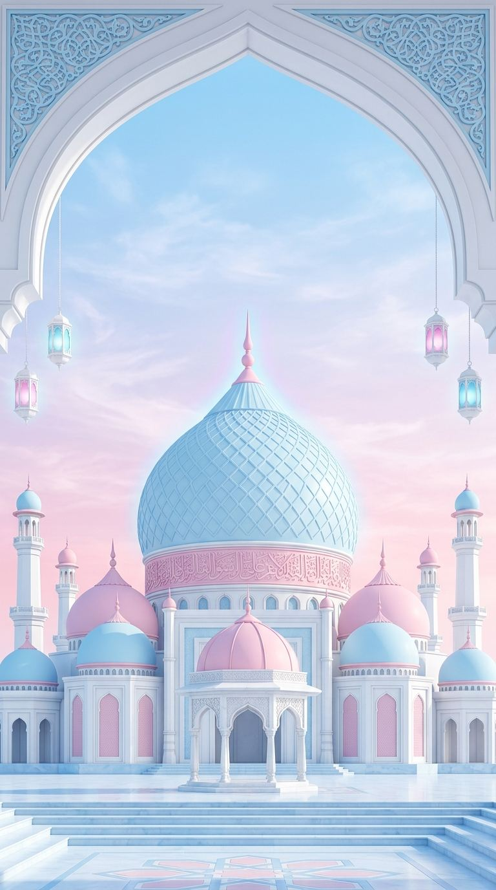
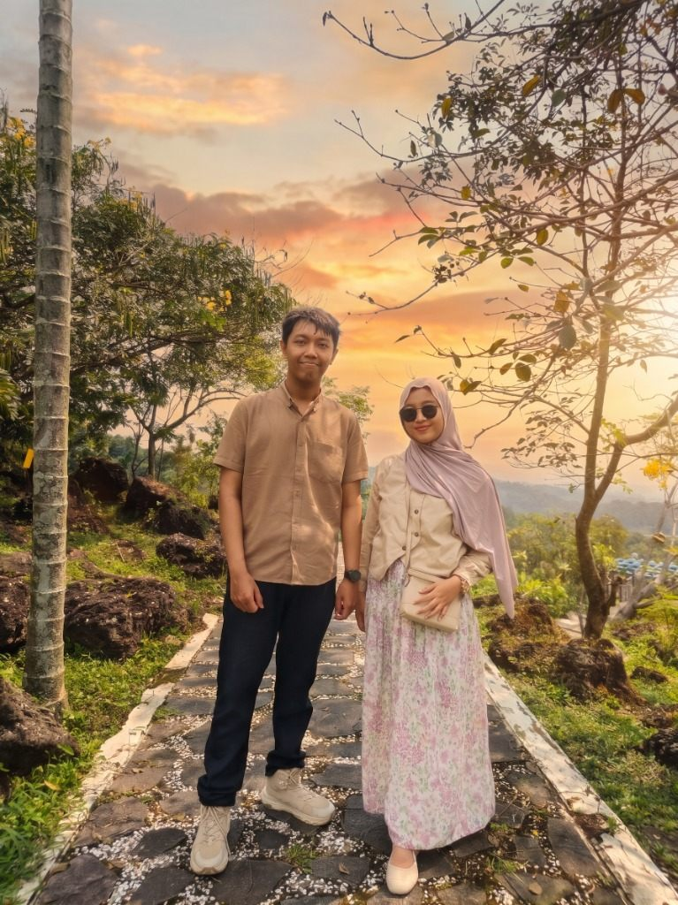
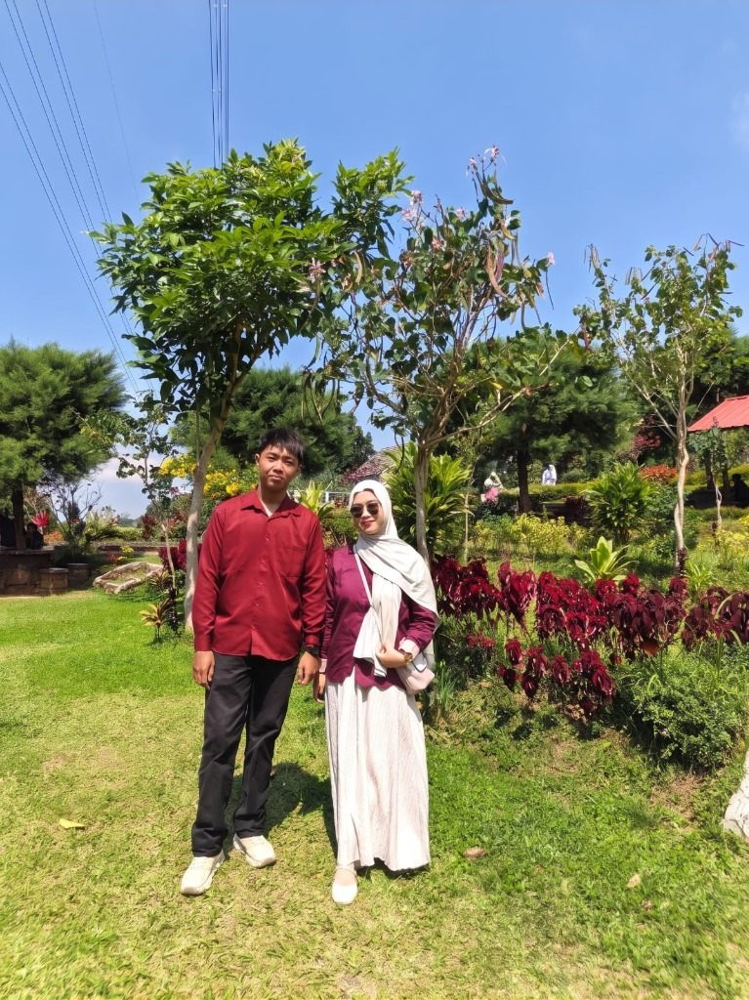
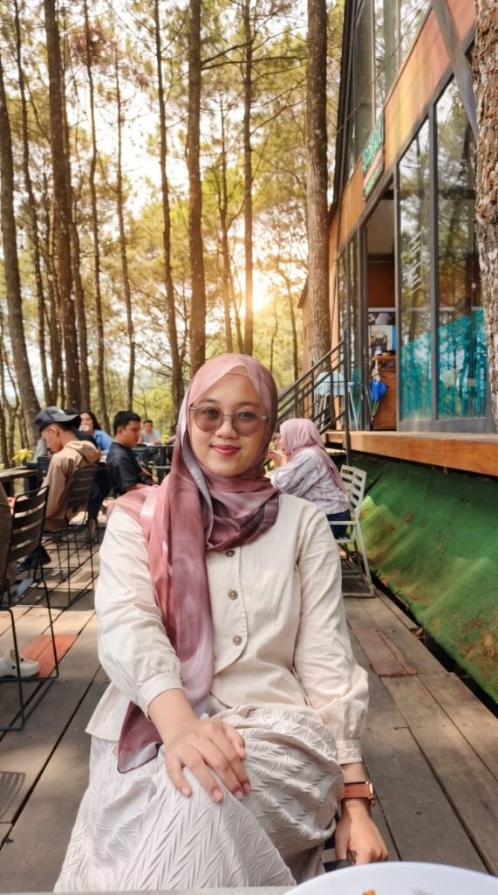
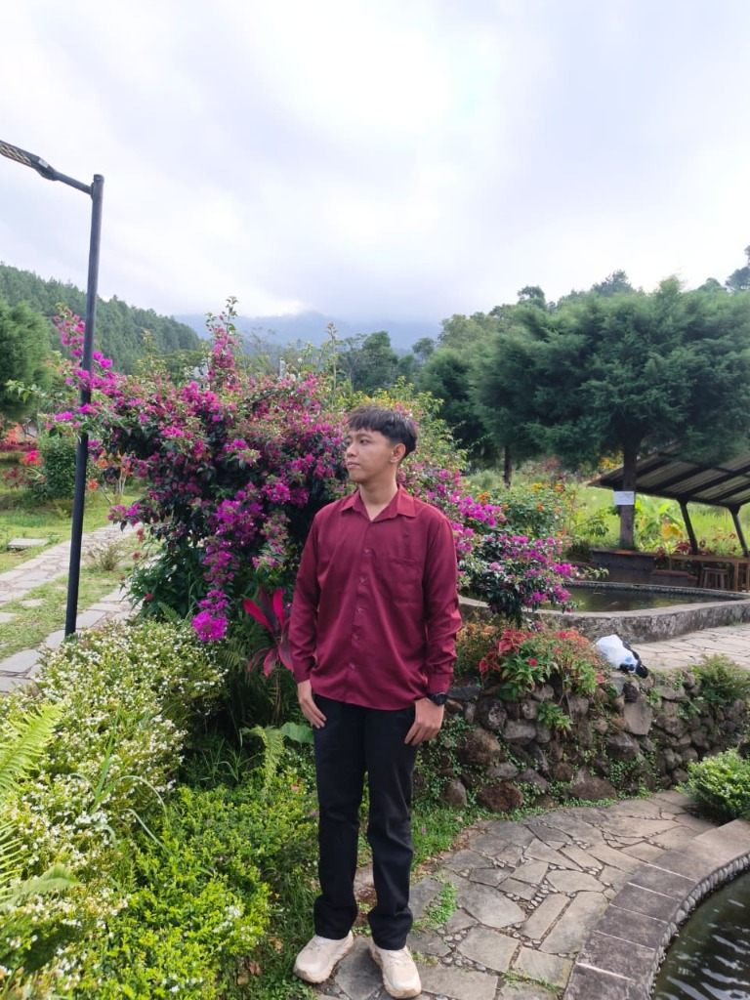
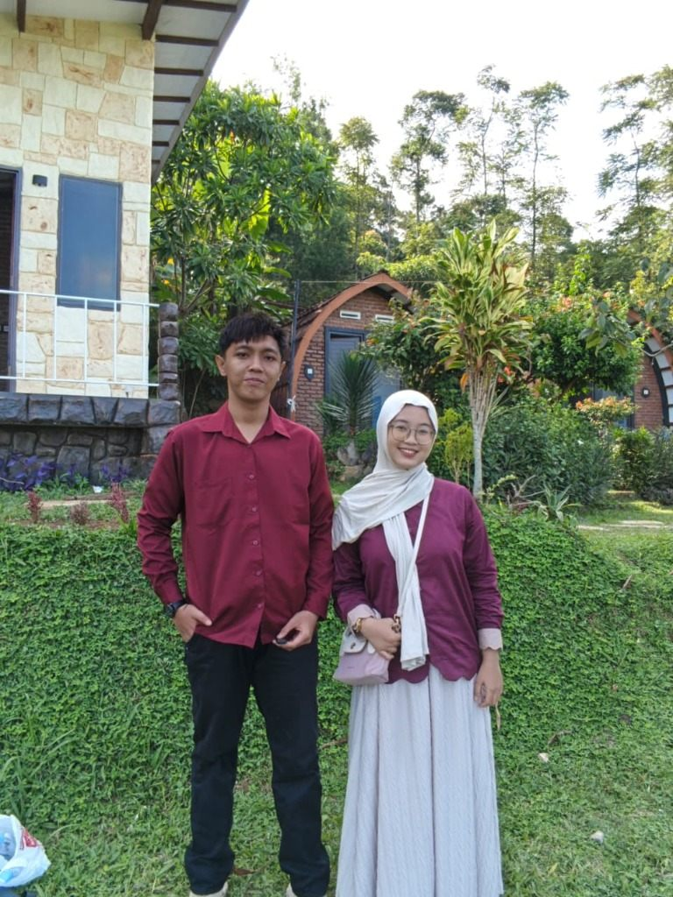

Akad Nikah
Minggu, 22 Agustus 2027
Pukul: 08.00 WIB
Tempat: Kediaman Mempelai Wanita
Dusun 2 RT 001 RW 005, Desa Karangtengah, Kec. Karangsembung, Kab. Cirebon

The Wedding of
Kepada Yth. Bapak/Ibu/Saudara/i
Tamu Undangan
Menuju Hari Bahagia
Minggu, 22 Agustus 2027 • 08.00 WIB
Momen Bahagia




Doa restu Bapak/Ibu/Saudara/i merupakan karunia yang sangat berarti dan menjadi hadiah terindah bagi kami. Namun jika memberi merupakan ungkapan tanda kasih, Bapak/Ibu/Saudara/i dapat mengirimkannya melalui:
0013 2007 3633
a.n. Muhamad Rafly Kristiadi
081395968281
a.n. Muhamad Rafly Kristiadi
082129034899
a.n. Siti Riani
Alamat Kirim Kado
Kediaman Mempelai Wanita
Dusun 2 RT 001 RW 005, Desa Karangtengah, Kec. Karangsembung, Kab. Cirebon
Doa & Konfirmasi Kehadiran

“Pernikahan yang bahagia adalah menyatunya dua insan, yang bersedia saling mengerti, memahami, dan saling memaafkan.”
Kami yang Berbahagia,
Siti Riani & Muhamad Rafly Kristiadi
22 Agustus 2027